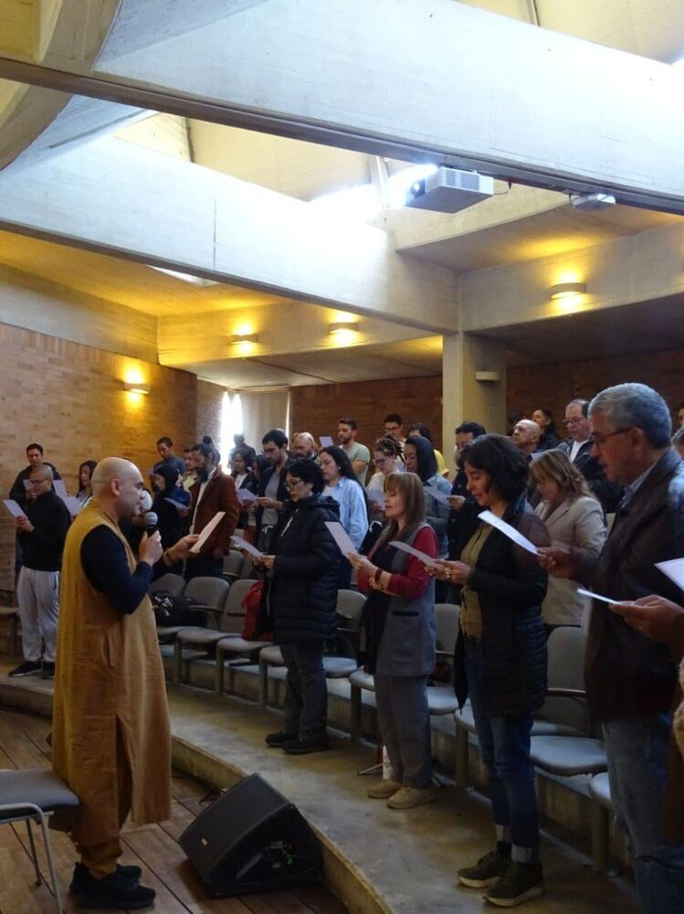
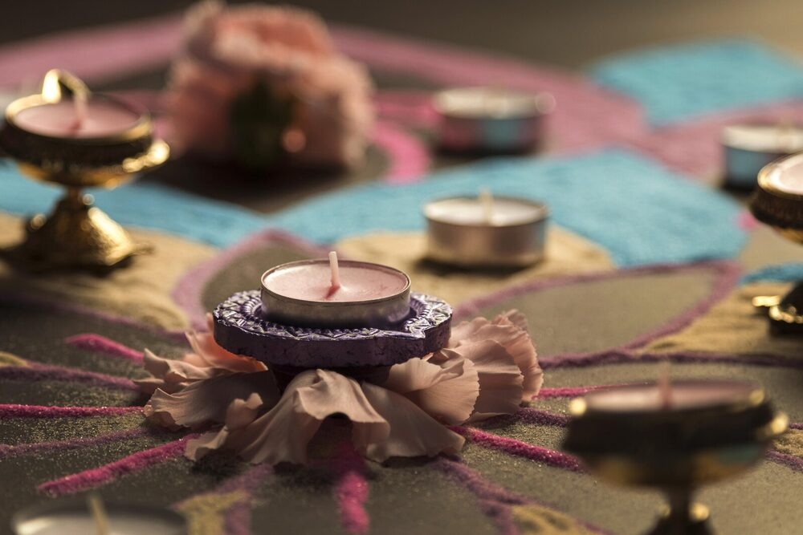

Amitābha
Amitābha es el Buda de la Luz Infinita, una de las figuras centrales del Budismo Mahāyāna y, especialmente, de la tradición de la Tierra Pura. Su nombre expresa la luz ilimitada de la sabiduría que ilumina a todos los seres sin distinción.
Alégrate, porque todo lugar es aquí y todo momento es ahora.
En la Comunidad Buddhista Camino del Dharma comprendemos la práctica como una experiencia viva, integrada a la vida cotidiana. No se trata de apartarse del mundo, sino de aprender a habitarlo con mayor presencia, claridad y cuidado.
Nuestros espacios están orientados a acompañar procesos reales de transformación interior mediante la meditación, la atención plena, la reflexión consciente y la vida comunitaria.

La meditación es el corazón de nuestra comunidad y el punto de encuentro más constante de nuestra práctica.
Cada semana ofrecemos un espacio abierto para pausar, respirar y cultivar presencia en medio de las exigencias de la vida diaria. La práctica es guiada y accesible, pensada tanto para quienes se inician como para quienes desean sostener una práctica continua en el tiempo.
No se requiere experiencia previa.
Amitābha es el Buda de la Luz Infinita, una de las figuras centrales del Budismo Mahāyāna y, especialmente, de la tradición de la Tierra Pura. Su nombre expresa la luz ilimitada de la sabiduría que ilumina a todos los seres sin distinción.
Guān Shì Yīn Púsà es el nombre chino del Bodhisattva de la Compasión, conocido en sánscrito como Avalokiteśvara. En la tradición del Budismo Chan su recitación expresa confianza, refugio y el cultivo de la compasión hacia todos los seres.
A lo largo del año realizamos talleres presenciales de un día, orientados a profundizar en distintos aspectos del camino buddhista y su aplicación en la vida cotidiana.
Estos espacios integran meditación, reflexión y práctica consciente, permitiendo una experiencia directa y situada de los temas abordados. Están pensados para personas que desean ampliar su comprensión y fortalecer su práctica de manera concreta y realista.
El retiro de iniciación es un espacio especialmente diseñado para personas que desean conocer y experimentar, de manera vivencial, los fundamentos de la práctica buddhista.
Durante dos días, las y los participantes se introducen en la meditación, la atención plena, la ética cotidiana y la comprensión de la mente, en un entorno cuidado y acompañado.
No se requiere experiencia previa.
Los retiros de meditación de dos o tres días están orientados a personas que ya cuentan con una práctica básica y desean profundizar su experiencia.
Estos espacios privilegian el silencio, la práctica sostenida y la observación directa de la mente, ofreciendo condiciones cuidadas para cultivar estabilidad, claridad y presencia.
No se busca forzar experiencias extraordinarias, sino acompañar procesos reales de profundización.
Conferencias y enseñanzas del Venerable Maestro Zheng Gong y la comunidad.
Encontrando la Plenitud y la Consciencia en la Vida
La sabiduría del no hacer
Conectar con nuestro planeta


Una vez al año realizamos el Encuentro Nacional de la Comunidad Buddhista Camino del Dharma.
Este espacio reúne a personas de distintas regiones para compartir práctica, reflexión y convivencia, fortaleciendo los lazos comunitarios y la experiencia colectiva del camino.
Cada año celebramos Vesak, conmemorando el nacimiento, la iluminación y el parinirvāṇa del Buda Śākyamuni.
La celebración se vive como un espacio de práctica, recogimiento y reflexión colectiva, abierto a la comunidad.
A lo largo del año realizamos conferencias y charlas sobre Buddhismo y temas contemporáneos, orientadas a tender puentes entre la práctica espiritual y los desafíos de la vida actual.
Estos espacios se anuncian de acuerdo con su programación vigente.